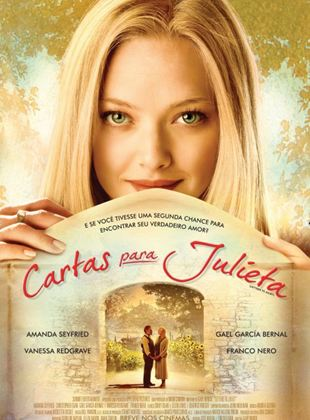

No dia dos Namorados planejem uma ida ao cinema para assistir aquele filme que os dois estavam com vontade de ver, ou então, façam uma sessão de cinema ou uma maratona de séries no aconchego de casa. Pensando nisso, selecionamos 10 filmes de romance que estão disponíveis para assistir nas plataformas de streaming e aproveitar o 12 de junho com alguém especial sem passar horas fuçando o catálogo. Para facilitar a sua vida, ainda colocamos uma pequena descrição de cada produção, bem como as sinopses dos filmes para facilitar sua escolha.
O Amor Não Tira Férias
O Amor Não Tira Férias é indispensável para quem gosta de histórias que mostram como o amor pode surgir quando as pessoas menos esperam, além de trazer um elenco recheado de talentos. O filme se passa no Natal e traz duas personagens muito bem-sucedidas profissionalmente, mas que ainda sentem a carência e a solidão bater na época mais fria do ano nos Estados Unidos; pensando em "mudar de ares", elas resolvem trocar de casas por um curto período - mas não esperavam que um romance poderia bater à porta, literalmente.
Embora de longa duração, é satisfatório ver aqui como Nancy Meyers cria uma atmosfera invernal e aconchegante independente da época do ano em que a obra for reproduzida. O roteiro, também assinado pela cineasta, é coeso e fluido e dá margem para todos os personagens da trama terem seu espaço, fazendo com que o público crie um carinho especial por cada um.
Sinopse: Iris (Kate Winslet) escreve uma coluna sobre casamento bastante conhecida no Daily Telegraph, de Londres. Ela está apaixonada por Jasper (Rufus Sewell), mas logo descobre que ele está prestes a se casar com outra. Bem longe dali, em Los Angeles, está Amanda (Cameron Diaz), dona de uma próspera agência de publicidade especializada na produção de trailers de filmes. Após descobrir que seu namorado, Ethan (Edward Burns), não tem sido fiel, Amanda encontra na internet um site especializado em intercâmbio de casas. Ela e Iris entram em contato e combinam a troca. Logo a mudança trará reflexos na vida amorosa de ambas, com Iris conhecendo Miles (Jack Black), um compositor de cinema, e Amanda se envolvendo com Graham (Jude Law), irmão de Iris.

Cartas Para Julieta
Esse filme é do tipo que traz um impacto diferente a cada momento em que é assistido justamente por abordar o amor em diferentes idades e situações. Cartas para Julieta acompanha a história da jornalista Sophie, que ao viajar com seu noivo para Verona, na Itália, descobre uma tradição de mulheres que precisam de conselhos amorosos, escrevendo cartas para uma mulher chamada Julieta e pendurando-as na parede. Ao responder uma abandonada de anos atrás, Sophie descobre um romance que nunca teve seu final feliz, mas na vida nunca é tarde para ir atrás de seu primeiro amor.
Gary Winick traz aqui um deleite visual de diversos locais da Itália, inclusive cidadezinhas do interior, capaz de entregar a atmosfera de uma das mais românticas cidades do mundo para o espectador. Além disso, Amanda Seyfried acaba sendo um show à parte.
Sinopse: Em Cartas para Julieta, Sophie (Amanda Seyfried) é uma aspirante a escritora que viaja para a Itália ao lado do noivo Victor (Gael García Bernal), que sonha em ter seu próprio restaurante. Em Verona, onde se passou a história de Romeu e Julieta, local perfeito para uma lua de mel antecipada, Sophie acaba percebendo que seu noivo está mais interessado nos fornecedores para seu restaurante do que nela. Na cidade descobre uma antiga carta de amor e junta-se a um grupo de voluntárias que responde estas missivas amorosas. Para sua surpresa, a remetente Claire Smith (Vanessa Redgrave) ouve o conselho dado na resposta e vai procurar Lorenzo, por quem se apaixonou na juventude. Mas existem muitos italianos com o mesmo nome e Sophie demonstra interesse em ajudá-la na tarefa, desagradando o neto Charlie (Christopher Egan), que já tinha reprovado essa louca aventura da avó viúva.
Um Lugar Chamado Notting Hill
Um dos maiores clássicos do romance noventista obviamente contaria com Julia Roberts no elenco. Notting Hill é, hoje, considerado uma referência do gênero cinematográfico para diversos escritores e cineastas românticos e não é pra pouco: o filme traz o enredo básico de Garoto Encontra Garota, mas viaja muito além em encontros secretos de um amor proibido que acabou de bater à sua porta — ou melhor, de sua loja de livros.
Em um mesclado de romance e emoção, o filme londrino ainda marcou a cidade como um dos principais pontos turísticos para os fãs de cinema e mostrou da forma mais simples como um beijo repentino pode mudar completamente a vida de duas pessoas. Ah, Um Lugar Chamado Notting Hill também é estrelado por Hugh Grant, que cá entre nós, está no auge da beleza nesse filme.
Sinopse: Will (Hugh Grant), pacato dono de livraria especializada em guias de viagem, recebe a inesperada visita de uma cliente muito especial: a estrela de cinema americana Anna Scott (Julia Roberts). Dois ou três encontros fortuitos mais tarde, Will e Anna iniciam um relacionamento tenro, engraçado e cheio de idas e vindas.
Amizade Colorida
Amizade Colorida é um filme bem engraçado. Primeiro porque ele aborda um tema que quase todo mundo já teve vontade de praticar, mas poucos são os felizardos: o Sexo sem Compromisso. Segundo, porque ele ganha vários pontos pelo simples fato de se reconhecer como uma comédia romântica e zoar das histórias desse mesmo gênero. Ou seja, usa dos clichês para fugir dos clichês.
Embora comédias românticas sempre sejam apenas boas desculpas para levarmos nossas namoradas para o cinema, aqui realmente pinta a oportunidade de ambos curtirem a fita. Amizade Colorida é emotivo mas não é meloso, é engraçado mas não é ofensivo e nem precisa de piadas estilo “American Pie” pra se fazer engraçado. É clichê sem ser clichê.
Sinopse: Jamie (Mila Kunis) é uma jovem recrutadora de Nova York que convence um cliente em potencial (Justin Timberlake) a deixar seu emprego em Los Angeles para trás e aceitar um emprego na Big Apple. Ele aceita a proposta e logo os dois se tornam bons amigos. Um dia, após assistir um filme na casa dela, surge o papo do quanto a carência sexual incomoda ambos. Eles fazem um pacto de que terão apenas sexo, sem qualquer envolvimento emocional. Só que, aos poucos, a intimidade faz com que eles se tornem cada vez mais próximos e interessados um no outro.
Você Nem Imagina
Você Nem Imagina é uma das boas surpresas no catálogo de títulos originais da Netflix, que consegue misturar romance adolescente numa narrativa adulta, longe do clichê já esperado para o gênero. O longa é iniciado mergulhando na filosofia por uma frase do diálogo "O Banquete", de Platão, deixando claro que a história trará uma compreensão do amor, não necessariamente o Amor Eros (que conhecemos como o amor romântico, passional, sexual), mas das várias formas em que o sentimento existe.
O filme é indicado para quem procura um desfecho fora do usual e personagens impossíveis de não se apegar e se emocionar.
Sinopse: Em Você Nem Imagina, Ellie Chu (Leah Lewis) é a típica aluna deslocada que possui o hábito de fazer a lição de casa de seus colegas por dinheiro para contribuir com as contas em casa. Secretamente, ela possui uma paixão pela bela Aster Flores (Alexxis Lemire). Quando Paul, um jogador de futebol, se aproxima de Ellie para pedir ajuda para escrever uma carta de amor para sua amada, ela entra em conflito.
Questão de Tempo
Questão de Tempo traz uma história de amor num formato curioso, mas interessante de se assistir: após o filho Tim (Domhnall Gleeson) completar 21 anos de idade, seu pai (Bill Nighy) decide que está na hora de revelar como os homens de sua família pertencem a uma linhagem de viajantes no tempo. Bastando apenas ir para um lugar escuro e mentalizar a época que deseja ir, Tim agora deve lidar com esse estranho poder e todas as consequências que podem ser desencadeadas.
Numa história leve, emocionante e impossível de não se apegar aos personagens, esse é um filme que vale o play independente da ocasião.
Sinopse: Em Você Nem Imagina, Ellie Chu (Leah Lewis) é a típica aluna deslocada que possui o hábito de fazer a lição de casa de seus colegas por dinheiro para contribuir com as contas em casa. Secretamente, ela possui uma paixão pela bela Aster Flores (Alexxis Lemire). Quando Paul, um jogador de futebol, se aproxima de Ellie para pedir ajuda para escrever uma carta de amor para sua amada, ela entra em conflito.
Diário de uma Paixão
Adaptação de um dos principais romances do rei da literatura do amor, Diário de uma Paixão é um título que brilha até hoje no portfólio de Nicholas Sparks. A obra acompanha um romance de veraneio que foi vivido intensamente, mas logo interrompido pelos pais de Allie Hamilton devido à discrepância financeira e social do casal. No entanto, apesar de todos os acontecimentos nas vidas dos dois personagens, o romance e todo o amor que nutriam um pelo outro nunca acabou — mesmo com o tempo passando e a interferência de outras pessoas. O filme trouxe diversas cenas que acabaram tornando-se eternas na história do romance cinematográfico, como o beijo do casal na chuva após anos sem se verem, as juras de amor às escondidas e a determinação de Allie e Noah para ficarem juntos independente do que acontecer. O longa é uma história que promete arrancar lágrimas do público independente do momento em que for assistido.
Sinopse: Numa clínica geriátrica, Duke, um dos internos que relativamente está bem, lê para uma interna (com um quadro mais grave) a história de Allie Hamilton (Rachel McAdams) e Noah Calhoun (Ryan Gosling), dois jovens enamorados que em 1940 se conheceram num parque de diversões. Eles foram separados pelos pais dela, que nunca aprovaram o namoro, pois Noah era um trabalhador braçal e oriundo de uma família sem recursos financeiros. Para evitar qualquer aproximação, os pais de Alie a mandam para longe. Por um ano Noah escreveu para Allie todos os dias mas não obteve resposta, pois a mãe (Joan Allen) dela interceptava as cartas de Noah para a filha. Crendo que Allie não estava mais interessada nele, Noah escreveu uma carta de despedida e tentou se conformar. Alie esperava notícias de Noah, mas após 7 anos desistiu de esperar ao conhecer um charmoso oficial, Lon Hammond Jr. (James Marsden), que serviu na 2ª Grande Guerra (assim como Noah) e pertencia a uma família muito rica. Ele pede a mão de Allie, que aceita, mas o destino a faria se reencontrar com Noah. Como seu amor por ele ainda existia e era recíproco, ela precisa escolher entre o noivo e seu primeiro amor.
Convidado Vitalício
É muito difícil encontrar atualmente a química entre dois protagonistas de comédia romântica como víamos nos anos 1990. No entanto, Convidado Vitalício conta com ninguém menos que o filho de uma das principais atrizes do gênero de romance do último milênio: Jack Quaid, filho de Meg Ryan. O filme é uma espécie de "amigos com benefícios" numa modalidade diferente: acompanhar um ao outro em todos os casamentos que forem convidados — já que ambos estão numa idade em que todos a sua volta estão casando e formando família, enquanto eles permanecem solteiros.
É claro que todo mundo sabe no que isso vai dar, mas ainda assim Convidado Vitalício é aquela comédia romântica gostosa de se assistir pela dinâmica da dupla em tela e pelo humor fácil que ambos promovem. Um filme leve, mas capaz de arrancar suspiros ao final.
Sinopse: Ben King e Alice Mori, ambos de vinte e poucos anos, se reencontram depois de um longo tempo separados no casamento de dois amigos em comum. Apesar da felicidade do evento, os dois enfrentam o maior desafio que já enfrentaram: verão; a temporada de casamentos. Alice teme isso, já que ela foi recentemente abandonada por seu namorado de longa data e agora está sem um acompanhante em todos os casamentos que é obrigada a comparecer. Para Ben, ele está simplesmente ganhando tempo e esperando complacentemente que seu par perfeito entre em sua vida. Com os dois precisando comparecer aos casamentos para os quais foram convidados, eles concordaram em ser um do outro em cada casamento para salvar a face, afastar amigos curiosos, ajudar Alice a superar a ausência do ex em sua vida e ajudar Ben a encontrar seu par aparentemente perfeito. No entanto, durante o verão; os dois finalmente percebem que às vezes o seu 'mais um' permanente não é a pessoa que você espera encontrar na vida.
Orgulho e Preconceito
Romances de época tendem a nos fazer suspirar e nos apaixonar pelo cenário de contos de fada e pela linguagem totalmente formal utilizada em tela. Em Orgulho e Preconceito, o diretor de elenco acertou em cheio ao escolher Keira Knightley para interpretar a sonhadora Elizabeth, uma jovem apaixonada e com uma mentalidade muito à frente de seu tempo. O acerto também vem ao elencar o ator Matthew Macfadyen para interpretar o durão Mr. Darcy, que se apaixona perdidamente pela protagonista.
Orgulho e Preconceito mostra o amor, a sensibilidade e a delicadeza nos detalhes — sem necessariamente retratar beijos e carícias em tela, consolidando-se como um dos mais românticos filmes da história do cinema até agora.
Sinopse: Inglaterra, 1797. As cinco irmãs Bennet - Elizabeth (Keira Knightley), Jane (Rosamund Pike), Lydia (Jena Malone), Mary (Talulah Riley) e Kitty (Carey Mulligan) - foram criadas por uma mãe (Brenda Blethyn) que tinha fixação em lhes encontrar maridos que garantissem seu futuro. Porém Elizabeth deseja ter uma vida mais ampla do que apenas se dedicar ao marido, sendo apoiada pelo pai (Donald Sutherland). Quando o sr. Bingley (Simon Woods), um solteiro rico, passa a morar em uma mansão vizinha, as irmãs logo ficam agitadas. Jane logo parece que conquistará o coração do novo vizinho, enquanto que Elizabeth conhece o bonito e esnobe sr. Darcy (Matthew Macfadyen). Os encontros entre Elizabeth e Darcy passam a ser cada vez mais constantes, apesar deles sempre discutirem.
Sintonia de Amor
Da mesma diretora que tomou conta do gênero de comédia romântica dos anos 1990, Sintonia de Amor poderia muito bem resumir a carreira inspiradora no cinema que foi de Nora Ephron. O filme junta, pela segunda vez (de quatro filmes estrelados juntos ao todo), Tom Hanks e Meg Ryan como o casal principal. Ela é uma jornalista de Baltimore que está prestes a se casar, e ele é recém-viúvo que acabou de se mudar para Seattle com o filho para tentar uma nova vida. Porém, numa noite, um telefonema para uma rádio muda tudo e de repente Annie (Ryan) se vê determinada a conhecer esse homem romântico que foi apelidado de Sleepless in Seattle.
Assim como diversos filmes de Nora Ephron, Sintonia do Amor entrega cenas memoráveis que marcaram o cinema de romance para sempre com uma química de ambos atores em tela que dificilmente dá pra ser encontrada hoje em dia. Capaz de te fazer suspirar e te inspirar a viver um romance de cinema no topo do Empire State Building.
Sinopse: Viúvo há um ano e meio, Sam Baldwin (Tom Hanks) não consegue esconder de seu pequeno filho Jonah (Ross Malinger) a tristeza pela qual está passando. Preocupado, Jonah participa de um programa de rádio chamado "Sleepless in Seattle", por telefone, dizendo que gostaria de arrumar uma namorada para o pai. Muito longe dali está Annie Reed (Meg Ryan) que, viajando de carro, ouve o desabafo de Sam e acaba se apaixonando por ele.